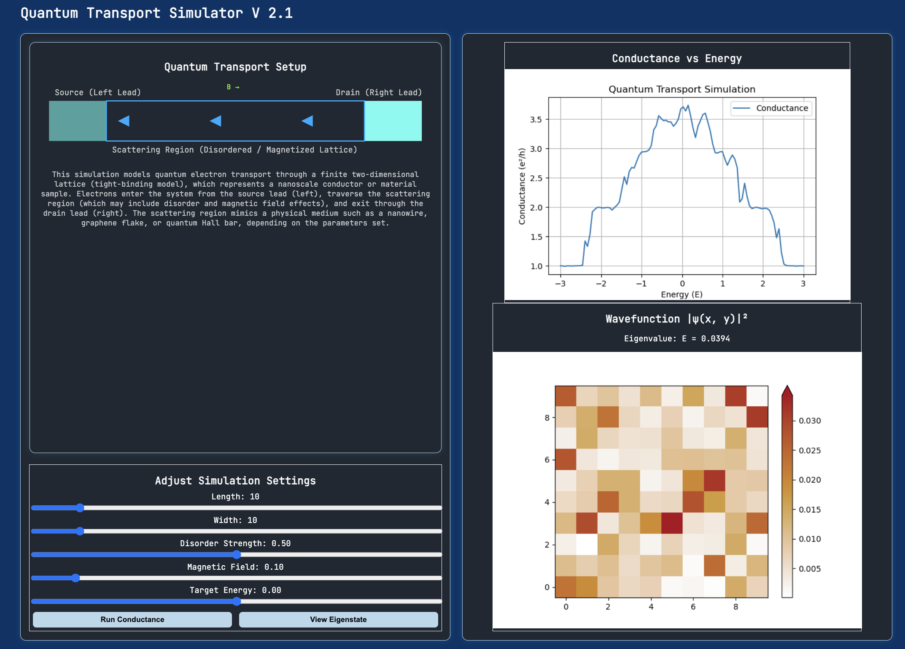

Modeling conductance in tight-binding systems under disorder and magnetic fields.

This project implements a computational framework for simulating electronic transport in lattice-based quantum systems using the tight-binding formalism. The primary objective was to model conductance behavior under varying degrees of disorder and external magnetic fields, and to visualize emergent transport phenomena.
The system numerically constructs the tight-binding Hamiltonian for finite lattices, incorporates on-site disorder potentials, and evaluates conductance using the Landauer transport formalism. By sweeping energy values and disorder strengths, the simulation reveals signatures of localization and transport suppression.
The tool was designed not just as a numerical solver, but as a structured research environment — allowing controlled parameter exploration, reproducible experiments, and visual interpretation of quantum transport behavior.
The Hamiltonian is constructed in the tight-binding approximation, with nearest-neighbor hopping and tunable on-site disorder. Magnetic field effects are incorporated via Peierls phase factors modifying the hopping amplitudes.
Conductance is computed using the Landauer formula, relating transmission probability to electronic conductance. Disorder-induced scattering and localization effects emerge naturally through random potential distributions.
The simulation pipeline is implemented in Python using NumPy for matrix construction and linear algebra operations. Energy sweeps and disorder realizations are automated for systematic analysis.
Visualization components use Matplotlib to generate conductance-versus-energy plots, enabling qualitative comparison between clean and disordered systems.
Beyond the physics engine, this project required full-stack engineering and deployment. I designed and configured the backend infrastructure, provisioned and deployed the application on an AWS EC2 instance, and set up an Nginx server for production routing. This process involved environment management, server configuration, and ensuring reliable remote execution of simulation workloads.
The system is modular and deployable, allowing extensions such as multi-band models, alternative lattice geometries, and scalable parameter sweeps — bridging scientific modeling with production-grade engineering practices.
• Demonstrated conductance suppression under increasing disorder (Anderson localization trends).
• Visualized transport plateaus under magnetic flux conditions.
• Built a reusable computational structure for future quantum transport studies.